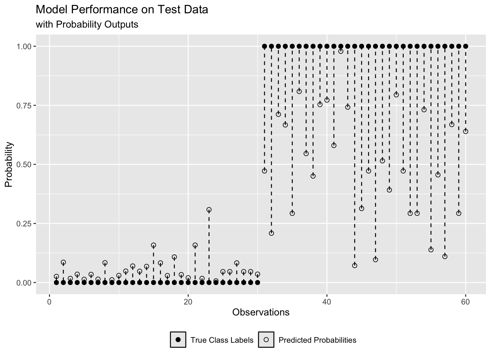
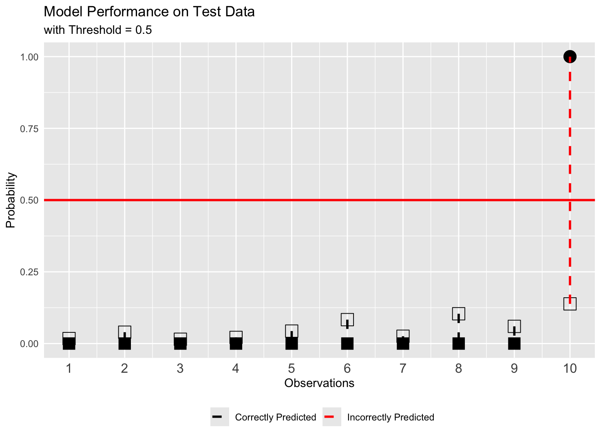
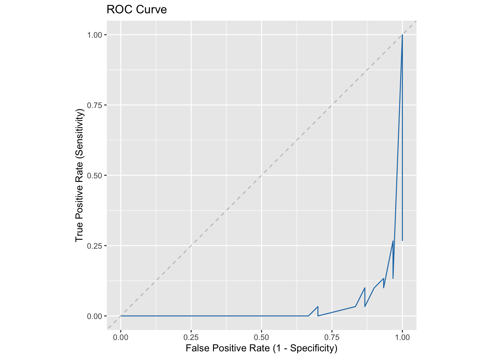

On model performance assessment in binary classification tasks
Thank you, Asma Ali and Thomas Bui for your insightful feedback
Before We Start
This article is aimed at those with some background in Machine Learning as it assumes the reader is familiar with the concepts of binary classification, model training, and evaluation metrics. Some refreshment is provided below.
Binary classification is a supervised learning task where the goal is to classify observations into one of two classes (0 or 1). For instance, in a medical diagnosis task, the model is trained to predict whether a patient has a disease (1) or not (0).
There are two types of training algorithms for binary classification:
Probability based algorithms (logistic regression, support vector machines with a sigmoid kernel, neural networks with a sigmoid activation function, etc.) which output probability - a value between 0 and 1 indicating the likelihood of an observation belonging to the positive class (1)
And Decision based algorithms (tree-based algorithms, etc.) which output a class label directly.
In reality, probability outputs are preferred because they provide more information about the uncertainty of the prediction. Nevertheless, decision based algorithms can output probabilities by using calibration methods when required.
After training, the model is evaluated on a test dataset to assess its performance. The evaluation process typically involves converting the predicted probabilities into class labels using a decision threshold, and then calculating various performance metrics based on the confusion matrix.
In details,
Decision Threshold: is a value between 0 and 1 such that if the probability output is greater than or equal to the decision threshold, the observation is classified as the positive class (1); otherwise, it is classified as the negative class (0).
Confusion matrix: is obtained by comparing the predicted class labels from the model with the actual class labels (0 or 1) in the test dataset. It shows the counts of:
True Positive (TP): The number of positive (1) instances correctly predicted as positive (1).
True Negative (TN): The number of negative (0) instances correctly predicted as negative (0).
False Positive (FP): The number of negative (0) instances incorrectly predicted as positive (1).
False Negative (FN): The number of positive (1) instances incorrectly predicted as negative (0).
Unpopular Opinions on Binary Classification Assessment
Calibration is an often-neglected aspect when assessing the performance of classification models
Accuracy is just one of many evaluation metrics — a high accuracy alone doesn’t guarantee good real-world performance, especially in imbalanced datasets.
While ROC curves are helpful for sensitivity analysis and threshold selection, interpreting them isn’t always straightforward, particularly when misclassification costs are unequal.
Calibration metrics
Calibration metrics in classification tasks evaluate how close the model’s predicted probabilities are to the true class labels (0 or 1), indicating the model’s reliability in estimating probabilities.
For example, in healthcare applications, a well-calibrated model would assign probabilities that closely reflect the true likelihood of disease presence or absence.
Some of the most common calibration metrics are:
The mean squared difference between predicted probabilities and actual class labels.
\[ \text{Brier Score} = \frac{1}{n} \sum_{i=1}^{n} (P_i - o_i)^2 \]
The negative log-likelihood of the predicted probabilities given the actual class labels.
\[ \text{Log Loss} = -\frac{1}{n} \sum_{i=1}^{n} \left[ o_i \log(P_i) + (1 - o_i) \log(1 - P_i) \right] \]
The root mean squared difference between predicted probabilities and actual class labels.
\[ \text{RMS Calibration Error} = \sqrt{ \frac{1}{n} \sum_{i=1}^{n} (P_i - o_i)^2 } \]
While the above metrics are useful for evaluating a model’s overall calibration, they don’t reveal how the model performs on each class individually. That’s why visualising predicted probabilities against actual class labels — as done in a reliability diagram (example in Figure 1 below)— is essential for uncovering insights that metrics alone might miss.

Accuracy Metrics
These metrics are calculated after converting predicted probabilities to class labels (0 or 1) using the decision threshold.
Accuracy: \(\frac{TP + TN}{TP + TN + FP + FN}\)
Sensitivity (True Positive Rate, Recall): \(\frac{TP}{TP + FN}\)
Specificity (True Negative Rate): \(\frac{TN}{TN + FP}\)
Precision (Positive Predictive Value): \(\frac{TP}{TP + FP}\)
False Positive Rate (FPR): \(\frac{FP}{FP + TN}\)
F1 Score: \(2 \cdot \frac{\text{Precision} \cdot \text{Recall}}{\text{Precision} + \text{Recall}}\)
Balanced Accuracy: \(\frac{\text{Sensitivity} + \text{Specificity}}{2}\)
And many more …
These metrics give a fuller picture than accuracy alone, especially in imbalanced datasets where the number of instances in one class outweighs the other.
For example, in a breast cancer classification dataset where 90% of the instances are cancer-free (class 0) and only 10% have cancer (class 1), a model that predicts everyone to be cancer-free would still achieve 90% accuracy. However, such a model would be useless, as it fails to identify any actual cancer cases.

Sensitivity analysis
ROC Curve plots the true positive rate (sensitivity) against the false positive rate (1 - specificity) at various thresholds to reveal how sensitive the model is to changes in the decision threshold for each class.

The optimal decision threshold is often chosen near the top-left corner of the ROC curve, where sensitivity and specificity are balanced. However, this assumes equal costs for false positives and false negatives — which is rarely the case.
In breast cancer screening, for example, missing a cancer case (false negative) is more serious than flagging a healthy person (false positive). In such cases, the threshold is lowered to prioritize detecting positives, making ROC interpretation less straightforward.
Figure 4 shows the same model as in Figure 3, with reliability diagram and a confusion matrix that updates with the threshold — making it easier to see how model’s performance changes.

Some Notes
This article isn’t an exhaustive guide to model performance in binary classification, but a reflection on often overlooked aspects — especially calibration metrics and sensitivity to decision thresholds.
The idea of plotting predicted probabilities against actual labels (reliability diagrams) comes from my own experimentation. All visualisations were created in R using ggplot2. Data and code are available here.